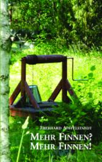
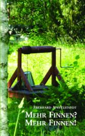

Insgesamt drei amüsante und kurzweilige Bücher über die Finnen und ihr Land hat Eberhard Apffelstaedt inzwischen verfasst: „Finnen? Finnen!“, „Mehr Finnen? Mehr Finnen!“ und „Kuckuck! ruft der Elch“.
Apffelstaedt, seit über 40 Jahren mit einer Finnin verheiratet, fühlt sich in Finnland wie zu Hause – „trotz und wegen der vielbeschworenen Schnaken, der durchaus bemerkenswerten finnischen Küche und der unfassbaren Sportbesessenheit der Finnen“, wie er sagt...
Während Apffelstaedt in den beiden ersten Bänden liebevoll-ironisch die besondere Spezies der Nordländer schildert, speziell und exemplarisch am Beispiel seines besten finnischen Freundes Matti, kommt Matti mit Ehefrau Päivi in „Kuckuck! ruft der Elch“ erstmalig nach Deutschland. Und der Autor nutzt diese Gelegenheit, mittels Mattis sehr individuellen Umgangsformen auch zahlreiche deutsche Schrullen humorvoll überzeichnend aufs Korn zu nehmen.
Kulturhaus Süderelbe
Am Johannisland 2
21147 Hamburg
Tel.: 040-7967222
E-Mail: info@kulturhaus-suederelbe.de
Im Rahmen der Veranstaltung spielt Eberhard Apffelstaedt am Klavier einige Stücke eines mit ihm befreundeten finnischen Musikers.
Es verspricht ein fröhlicher Vormittag zu werden! In der Pause gibt es außer Kaffee und Kuchen auch finnische Spezialitäten, wie "korvapuusti" und "karjalanpiirakka".
Der Eintritt ist frei.
Im Anschluss an die Lesung steht der Autor für Diskussion und zum Signieren seiner Bücher zur Verfügung.
Eine Veranstaltung in Kooperation mit der Deutsch-Finnishen-Gesellschaft (DFG) mit freundlicher Unterstützung durch Botschaft von Finnland in Berlin und Suomi Seura r.y.